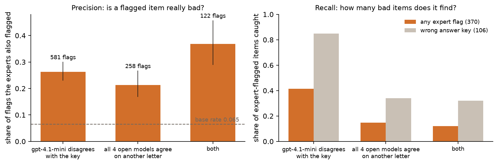
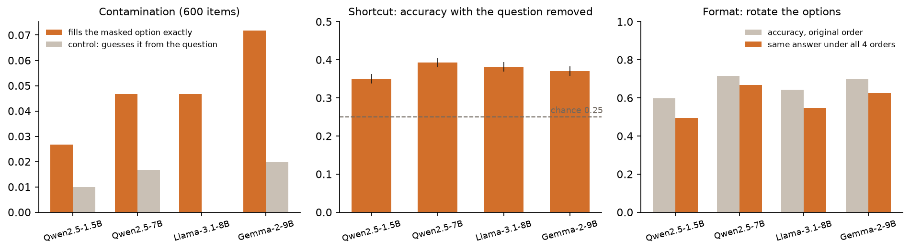
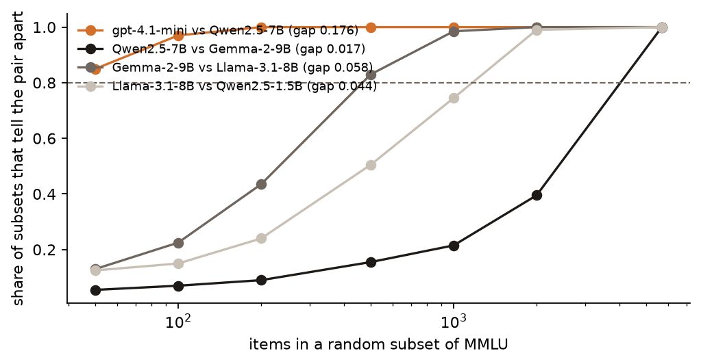
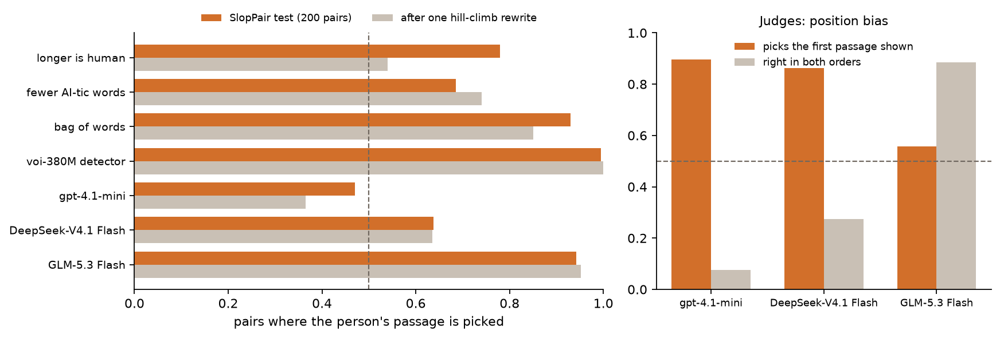

← Research·Experiments·
How to build a benchmark 101: nine checks, run on MMLU and on a new benchmark
Every step of building a benchmark, each shown with the number that says what skipping it costs. On MMLU, 6.5% of items are flawed and one cheap model finds 85% of the wrong answer keys. On SlopPair, a new benchmark built here, a bag of words scores 93% and a judge that looks merely weak (47%) is mostly reading which passage came first.
results/summary.json by make_cover.py.Summary: the short answer and the key results
In short
What does it take to build a benchmark whose number means something?
Nine checks, each cheap, each able to change what the number means. This note runs all nine twice: once on MMLU, a benchmark everyone uses, against expert labels of its errors; once on SlopPair, a benchmark built here from scratch (“which of these two passages did a person write?”). On MMLU the checks mostly reassure: a few percent of flawed items, a small memorisation signal in two models, and a ranking that survives cleaning and reordering. They also show that a 1.7-point gap between two models needs all 5,700 items to see. On SlopPair the checks change the verdict: a word-count model scores 93%, two of three LLM judges mostly pick whichever passage is shown first, and one round of “make it sound human” knocks the simplest rule from 78% to 54%.
Key results
| Step | MMLU (audited) | SlopPair (built) |
|---|---|---|
| 2 · Labels | 6.5% of items flawed [5.9, 7.2] by expert review; flagging where gpt-4.1-mini disagrees with the key gives 581 flags, 26% of them truly bad (4.1× the base rate), including 85% of the 106 wrong keys | 299 of 300 rewrites keep every fact (model check) |
| 3 · Contamination | Gemma-2-9B fills a hidden option word for word in 27 of 519 items vs 7 from the question alone (p = 0.0005); Llama 11 vs 0; Qwen none once rebuildable options are removed | None found: continuing human and AI text gives the same overlap (ROUGE-L 0.13–0.15) |
| 4 · Trivial baselines | Options only, no question: 35–39% against 25% chance | A bag of words: 93% [89, 97]; “the longer one is human”: 78%; a 380M detector: 99.5% |
| 5 · Format | Rotating the four options changes 33–51% of answers, but moves accuracy only 1–3 points and never flips a ranking | Position bias: gpt-4.1-mini picks the first passage 90% of the time and is right in both orders on 7.5% of pairs |
| 6 · Statistics | A 1.7-point gap (Qwen2.5-7B vs Gemma-2-9B) is told apart by 2,000 random items only 40% of the time | GLM-5.3 beats DeepSeek on 122 pairs and loses on 0 |
| 7 · Judges | — | Judges range from 47% to 94% on the same pairs; the DeepSeek judge is worst on DeepSeek’s own rewrites (52% vs 63–75%) |
| 8 · Difficulty, hill-climbing | gpt-4.1-mini is at 90% or more on 31 of 57 subjects: half of MMLU is saturated for it | One “make it sound human” rewrite: length rule 78% → 54%, bag of words 93% → 85%; the detector and the best judge do not move |
| Cleaning | Dropping flawed items raises every model 1.5–2.5 points and changes no ranking; on wrong-key items, models agree with the corrected key 52–77% of the time | — |
01Introduction
A benchmark is a promise that one number stands for one ability. Ask a model “In which of the following positions does a patient lie face down?”, offer Dorsal, Erect, Lateral and Prone, and score it against MMLU’s answer key: the key says Erect. The model that answers Prone is marked wrong. That item is one of 106 in MMLU-Redux’s 5,700 with a wrong key, and the reason this note exists: a benchmark’s number is only as good as the checks behind it.
What is known. How benchmarks fail is well studied: label errors (MMLU-Redux found 6.5% of MMLU flawed), contamination (TS-Guessing asks a model to fill in a hidden wrong option; Epoch AI’s FrontierMath commissions new problems to avoid it), shortcuts, position bias in model judges, and saturation. Practitioner guides (Hamel Husain’s writing on evals, Stanford’s CS336 lecture on evaluation, Moritz Hardt’s talks on the science of benchmarks) cover the craft. Community projects such as the conspiracy-bench plan on Station House split the work into two phases, build then hill-climb, and validate their judge against people before trusting it.
What is missing. The checks are usually described one at a time, on someone else’s data. A newcomer rarely sees all of them run in order on one benchmark with the number each produces, and almost never the same checks applied both to an old benchmark and to a new one.
If you build or adopt a benchmark, which checks change what its number means, and by how much?
What this note does. It runs nine checks on two running examples and reports every number. Its contributions:
- An audit of MMLU against expert error labels: how well a cheap automatic auditor finds bad items, and whether cleaning changes any conclusion.
- A new small benchmark, SlopPair, built from scratch, and the checks that show what it really measures.
- A checklist to copy, and a reading of a third benchmark (CCBench) from its README.
What would count as an answer. Fixed in the plan before any run: an auditor is useful if at least 3× as many of its flags are real errors as a random pick would give; a bag of words at 90% or more means the benchmark mostly measures style a word count can read; every rate gets an interval.
02Setup: the two running examples
2.1 Example A: MMLU, audited
MMLU is 57 subjects of four-option questions. MMLU-Redux 2.0 had experts re-check 100 questions per subject, 5,700 in all, and label each: fine, or one of six error types (unclear question, unclear options, no correct option, several correct, wrong key, needs expert knowledge). 370 items (6.5%) are flagged; 106 have a wrong key. Those labels are the answer key for the audit itself.
Five models answer every item: four open models (Qwen2.5-1.5B, Qwen2.5-7B, Llama-3.1-8B, Gemma-2-9B, all Instruct), scored by which of the letters A–D they make most likely, and gpt-4.1-mini, which may reason before giving a letter.
2.2 Example B: SlopPair, built
SlopPair asks: shown a person’s passage and an AI model’s rewrite of the same passage, can a reader or detector tell which is the person’s? It was built in steps 1–2 below: 300 human passages written before 2023, 43 each from news, arXiv abstracts, Hacker News, Reddit, Stack Exchange, Amazon reviews and Medium (one source 42), each 120–300 words; each rewritten by one of gpt-4o-mini, DeepSeek-V4.1 Flash and gpt-oss-120b with the instruction to keep every fact, the length and the register; split into 100 development and 200 test pairs.
| Set | What it is | Size | Used in |
|---|---|---|---|
| MMLU-Redux 2.0 | MMLU items with expert error labels | 5,700 | Steps 2–8 (A) |
| TS-Guessing sample | Fixed random items with one wrong option hidden (seed 0) | 600 | Step 3 (A) |
| SlopPair | Person’s passage + AI rewrite, random order; dev / test | 100 / 200 | Steps 3–8 (B) |
| SlopPair, hill-climbed | Each test rewrite rewritten again “to read as if a person wrote it” | 200 | Step 8 (B) |
03How the study was run
- Plan committed with the code and MMLU data before any model ran (PLAN.md).
- Open models (Modal, one H100 each): 5,700 items × 4 option orders + options-only, and 600 TS-Guessing fills plus 600 controls, per model.
- gpt-4.1-mini: 5,700 items with reasoning, and the same 1,200 TS-Guessing calls.
- SlopPair: 300 rewrites, fact checks, split; three judges × 200 test pairs × 2 orders; 200 hill-climb rewrites judged the same way; 300 continuations for contamination; four baselines.
- Analysis from saved results only (
analyze.py).
| Fixed before any run | Changed after reading results |
|---|---|
| Steps, prompts, model roles, splits, seeds, sample sizes, thresholds (auditor 3× base rate; bag of words 90%) | Providers (before any result): OpenRouter and Anthropic had no credit, so the auditor became gpt-4.1-mini (planned: Gemini 2.5 Flash), the rewriters gpt-4o-mini, DeepSeek-V4.1 Flash and gpt-oss-120b, and the judges gpt-4.1-mini, DeepSeek-V4.1 Flash and GLM-5.3 Flash. |
| Scoring rules for every step | Pipeline fixes found on pilots: the answer parser (the auditor writes “\boxed{B}”); the auditor’s token limit (700 → 1,500; 3 of 60 replies were cut off); DeepSeek’s reasoning switched off (it spent its whole budget thinking and returned 56 empty or cut-off rewrites, regenerated); Gemma scored on the last position only (out of memory). |
| — | Exploratory, labelled as such: the contamination test repeated without options that can be rebuilt from their siblings (4.3). |
Conditions: open models in bfloat16 on rented H100s (Modal), greedy; API models at temperature 0. Cost: about $3.6 of API calls and about $3 of GPU.
04Results: the nine steps
4.1 Step 1: write down what a wrong item looks like before you collect any
A benchmark’s claim has to be specific enough that an item can violate it. MMLU’s claim is “broad knowledge across 57 subjects”; MMLU-Redux’s six error types are what violating it looks like. SlopPair’s claim, written before any item: “a reader or detector can tell a person’s passage from a model’s rewrite of the same content”. An item is wrong if the rewrite adds or drops facts (then the pair differs in content, not authorship) or if the human passage is boilerplate. Writing these down first is what made steps 2 and 4 possible: without “same content”, there is no reason to check facts, and no reason to be alarmed when length predicts the answer.
4.2 Step 2: audit the labels; a cheap model finds most wrong keys
Flagging every MMLU item where gpt-4.1-mini disagrees with the key gives 581 flags (10 per 100 items). 26% of them [23, 30] are items the experts also flagged, 4.1 times the 6.5% base rate, and they include 90 of the 106 wrong keys (85%). Figure 1 compares it with a second auditor, all four open models agreeing on a different letter: fewer flags (258), lower precision (21%), and only 34% of the wrong keys. Requiring both raises precision to 37% but catches few.

Two of the wrong keys it caught: the face-down question above (key: Erect; auditor and experts: Prone), and a chemistry item on why spin trapping is used, where the key picks a statement about power and the auditor and experts pick the one about concentrations too low for direct detection. The practical reading: an LLM auditor is a triage tool. It finds most wrong keys cheaply, but three of four flags are fine items it got wrong, so a person still reviews each flag. It finds less of the subtler errors (unclear questions, several right answers): 41% of all flagged items, against 85% of wrong keys.
4.3 Step 3: check contamination, and test the boring explanation of the test
Asked to fill in a hidden wrong option, the open models reproduce it word for word on 2.7–7.2% of 600 items, against 0–2% when writing an option from the question alone; all four differences are significant. But 81 of the 600 hidden options can be rebuilt from the visible ones (“True, False” next to “True, True” and “False, False”). Without them, Qwen2.5-1.5B and 7B show no signal (7 vs 5 and 11 vs 9 of 519), while Llama-3.1-8B (11 vs 0, p = 0.001) and Gemma-2-9B (27 vs 7, p = 0.0005) keep a small one.

This is the step’s most useful lesson: a contamination test can itself have a boring explanation, and its control has to rule it out. The question-only control did not see the other options, so it could not exploit their pattern; the masked test could. The first reading (“all four models memorised MMLU”) was too strong; the second (“two of four show a small signal”) survives. gpt-4.1-mini shows none (3 vs 5). SlopPair needed the same check in another form: a judge that had memorised the human passages would continue them better than it continues new AI text. It does not: the overlap with the true continuation is 0.13–0.15 for both, for all three judges, with every interval including zero.
4.4 Step 4: run trivial baselines; on SlopPair, a word count is enough
On SlopPair’s 200 test pairs, a bag-of-words model (logistic regression on word counts, cross-validated) picks the person’s passage 93% of the time [89, 97]; “the longer passage is the person’s” gets 78%; a small public detector, voi-slop-detect-380M, gets 99.5%. By the rule set in the plan (90% or more), SlopPair mostly measures style that a word count can read. The words that give it away: the person’s side is marked by plain words (“of”, “will”, “so”, “have”, “you”, “like”, “said”), the rewrite’s by “may”, “simply”, “through”, “whether”, “examine”, “within”, “additional”, “significant”.
On MMLU the shortcut is smaller but real: shown only the four options, no question, the open models score 35–39% against 25% chance (Figure 2, middle). Some options simply look more like answers. “Pick the longest option” gets 28%. A benchmark’s floor is not chance; it is the best shortcut you have tried.
4.5 Step 5: shake the format; answers move, rankings may not, judges can
Rotating MMLU’s four options changes 33–51% of each model’s answers, yet moves accuracy by only 1.1–2.8 points and never changes which of two models ranks higher. Many answers are close calls the model flips either way; over 5,700 items the flips mostly cancel (Figure 2, right). Reporting accuracy from one order is acceptable for ranking these models; reporting any single item’s answer as the model’s view is not.
On SlopPair the format matters far more. Each judge saw every pair twice, once with the person’s passage first and once second. gpt-4.1-mini named the first passage as the person’s 90% of the time; its answer flipped with the order on 79% of pairs, and it was right in both orders on only 15 of 200 pairs (7.5%). Its headline 47% is not a weak judge doing its best; it is mostly a judge reading position. DeepSeek-V4.1 Flash picked first 86% of the time (right in both orders on 28%). GLM-5.3 Flash, a model that reasons before answering, picked first 56% of the time and was right in both orders on 89% (Figure 4, right).
4.6 Step 6: count the items you need; small gaps need thousands
Qwen2.5-7B beats Gemma-2-9B by 1.7 points over all 5,700 items. In random subsets of 2,000 items, a paired interval separates them only 40% of the time; at 500 items, 16%. Larger gaps need fewer items: Gemma vs Llama (5.8 points) is separated 83% of the time with 500 items, gpt-4.1-mini vs Qwen2.5-7B (17.6 points) 85% of the time with 50 (Figure 3). Every MMLU accuracy here has an interval of about ±1.2 points: 0.598 (Qwen2.5-1.5B), 0.642 (Llama), 0.700 (Gemma), 0.717 (Qwen2.5-7B) and 0.893 (gpt-4.1-mini).

Before trusting a ranking from a benchmark of a few hundred items, ask what gap it can resolve. SlopPair’s 200 test pairs are enough for its large differences (GLM-5.3 right in both orders on 122 pairs where DeepSeek was not, and the reverse on none) and too few for gaps of a few points.
4.7 Step 7: validate the judge on cases with a known answer
Three judges, the same 200 pairs, the same prompt: 47% [44, 50], 64% [61, 67] and 94% [92, 97]. SlopPair’s labels come from provenance, so every judge can be checked against the truth, and the check decides everything: picked without it, a judge could be off by half the scale. Two more findings:
- Self-recognition. The DeepSeek judge was worst on DeepSeek’s own rewrites: 52%, against 75% on gpt-4o-mini’s and 63% on gpt-oss-120b’s. A model judging text from its own family is a conflict to measure, not to assume away.
- People. A blind 40-pair page for a person to label is in the code (
make_human_check.py); this version publishes without a human score. Conspiracy-bench’s plan is the right model: validate the judge against people (they report κ 0.76) before scaling it.

4.8 Step 8: check difficulty, then hill-climb it
gpt-4.1-mini scores 90% or more on 31 of MMLU’s 57 subjects; Qwen2.5-7B on 2. For the stronger model, half of MMLU no longer separates anything. Its weakest subject is virology (53%), where MMLU-Redux’s experts flagged 57 of the 100 items, the most of any subject: part of what remains “hard” is broken. A benchmark is informative only in the band where models still fail for the right reasons.
Hill-climbing SlopPair with one rewrite (“make this passage read as if a person wrote it; keep every fact”) drops the length rule from 78% to 54% and the bag of words from 93% to 85%; the detector (100%) and the best judge (95%) do not move. The cheapest signals break first under optimisation, as they should. The surprise is the other direction: the rewrite pushed gpt-4.1-mini further below chance (47% → 37%) and nudged the AI-tic word list up (69% → 74%). Asking a model to sound human made its text more recognisable to the strongest readers, not less. Conspiracy-bench’s phase 2 is the general form of this step: once the benchmark exists, optimise against it on purpose and see which of its numbers survive.
4.9 Step 9: release with care
Every SlopPair file carries a canary string; the test split is marked “do not train”; the 200 hill-climbed rewrites ship beside the originals. The human passages do not ship: they come from public datasets under several licences, so the release is the AI rewrites, source ids, labels and every score, with the script that rebuilds the human side. Releasing a benchmark is a licensing decision as much as a technical one. For MMLU, the cleaned list (Redux items marked fine, with our auditor’s flags as a review column) can be rebuilt from results/a_api.json and the public MMLU-Redux data.
05The checklist
The nine checks as a list to tick through for your own benchmark (ticks are saved in this browser only).
06Reading someone else’s benchmark: CCBench
The checklist also works on a benchmark you did not build, from its README. CCBench measures whether a coding agent can add a feature to a small, messy, human-written codebase (187 private CodeCrafters submissions) so that the platform’s own tests pass. Step by step: its labels are excellent (hand-written tests used by many thousands of learners, and a reference solution per task); its contamination claim is narrower than it sounds (the starting code is private, but the features, such as backreferences in a home-made grep, have many public solutions, and runs allow internet access); it reports no trivial baselines; each row mixes the model with its agent harness and timeout (one model timed out on about a quarter of tasks); and it reports no intervals. With 187 tasks and one run, 75.4% is roughly [69, 81] and 72.7% roughly [66, 79], so its top two are not separated. None of this makes CCBench a bad benchmark; it tells you which of its numbers to lean on.
07Implications for AI safety
Safety cases increasingly rest on benchmark numbers: a dangerous-capability score below a threshold, a monitor’s catch rate, a judge’s verdict on a model’s honesty. Each failure here would distort such a claim in a known direction. A judge reading position reports noise as signal; a shortcut baseline at 93% means a detector can pass without the ability the benchmark names; a gap smaller than the benchmark can resolve turns a tie into a ranking; and a check whose control is weaker than it looks (4.3) can make a benchmark look more contaminated, or less, than it is.
The recommendation in one sentence: before a benchmark number is used to decide anything, report beside it its trivial baselines, its judge’s position bias, its interval and the smallest gap it can resolve.
08What this does not show
- One audited benchmark, one built. MMLU is old, multiple-choice and well studied; open-ended and agentic benchmarks fail in further ways (the CCBench reading shows a few).
- Cheap models as auditors and judges. A stronger auditor would likely raise precision; the planned Gemini auditor was replaced by gpt-4.1-mini for credit reasons before any result.
- SlopPair is deliberately simple. Pairs with identical content leave style as the only difference, which is why word counts do so well; a harder version would mix topics, lengths and lightly edited text.
- No human labels yet. The person-vs-judge agreement (4.7) is set up but not run.
- One round of hill-climbing with a fixed prompt; an optimiser that sees the judge’s verdict would push much harder.
09Reproduce it
Recompute every number and figure from the shipped results, with no model calls:
experiments/benchmark-101/reproduce.sh --scoresRerun everything (about $7: four Modal H100 runs, OpenAI and Fireworks keys, and a local copy of the human passages for SlopPair):
experiments/benchmark-101/reproduce.sh --dry-run # lists every command
experiments/benchmark-101/reproduce.sh10What’s next
- The 40-pair human check, to put a person’s accuracy and κ beside the judges.
- A harder SlopPair: lightly edited text, mixed lengths, and an optimiser that sees the judge.
- The same nine checks on an open-ended benchmark graded by a model judge, where step 7 does the most work.
11Questions and answers
How do you build a benchmark?
Define what the score should mean and what a wrong item looks like; collect items and audit their labels; test for contamination and trivial shortcuts; check that the score is stable under format changes; report intervals and the smallest gap you can resolve; validate any judge against known answers; check difficulty and whether optimising against it breaks it; and release with a held-out split and a canary string.
How many errors are in MMLU?
MMLU-Redux’s experts flagged 370 of 5,700 re-checked items (6.5%), 106 with a wrong answer key. Flagging items where gpt-4.1-mini disagrees with the key caught 85% of those wrong keys, with about one flag in four a real error.
Do LLM judges have position bias?
Some strongly. Asked which of two passages a person wrote, gpt-4.1-mini named the first one 90% of the time and was right regardless of order on only 7.5% of pairs; a reasoning model, GLM-5.3 Flash, named the first 56% of the time and was right in both orders on 89%.
How many items does a benchmark need?
It depends on the gap you want to see. On MMLU, a 17-point gap is visible with 50 items, a 6-point gap needs about 500, and a 1.7-point gap needed all 5,700.
AAppendix: data
Every number comes from a file in results/; README.md describes every field.
a_open/<model>.json: per MMLU item, each open model’s answer in four orders and options-only; TS-Guessing fills and controls.a_api.json: gpt-4.1-mini’s answer per item, and its TS-Guessing fills and controls.sloppair_items.json,sloppair_hill.json: SlopPair without the human text (ids, source, rewriter, rewrite, fact check, order, split), and the hill-climbed rewrites.b_judge.json,b_baselines.json: every judge answer in both orders and every baseline’s verdict, on the original and hill-climbed pairs; contamination overlaps.summary.json: every number quoted here, written byanalyze.py.
Further reading
- Gema et al., Are We Done with MMLU? (MMLU-Redux), 2024.
- Deng et al., Investigating Data Contamination in Modern Benchmarks for Large Language Models (TS-Guessing), 2023.
- Epoch AI, FrontierMath: commissioned problems to resist contamination.
- Hamel Husain, Your AI product needs evals, and his talks on error analysis.
- Stanford CS336, the lecture on evaluation.
- Moritz Hardt, “The emerging science of benchmarks” (talk): annotator error and whether rankings transfer.
- Andriushchenko et al., AgentHarm, 2024; Truth Decay and PPT-Bench on multi-turn pressure and judge separation.
Tech stack
| Open models | Qwen2.5-1.5B and 7B, Llama-3.1-8B, Gemma-2-9B (Instruct), bfloat16, Hugging Face Transformers, one H100 each on Modal |
|---|---|
| API models | gpt-4.1-mini, gpt-4o-mini (OpenAI); DeepSeek-V4.1 Flash, GLM-5.3 Flash, gpt-oss-120b (Fireworks); temperature 0 |
| Detector | voi-slop-detect-380M, run locally |
| Cost | About $3.6 API and $3 GPU |
Revision history
- Nov 17, 2026: First published.
How to cite
@misc{lie2026benchmark101,
author = {Albert Lie},
title = {How to build a benchmark 101: nine checks, run on MMLU and on a new benchmark},
year = {2026},
month = nov,
url = {https://albertlieyingadrian.github.io/steerlab/experiments/benchmark-101/report/}
}